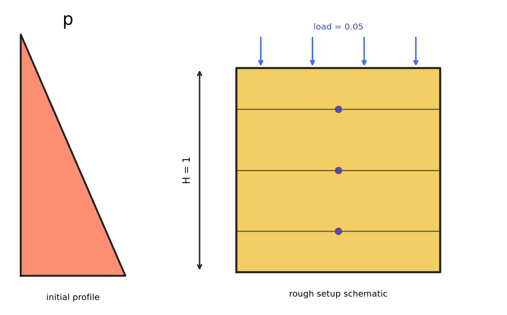
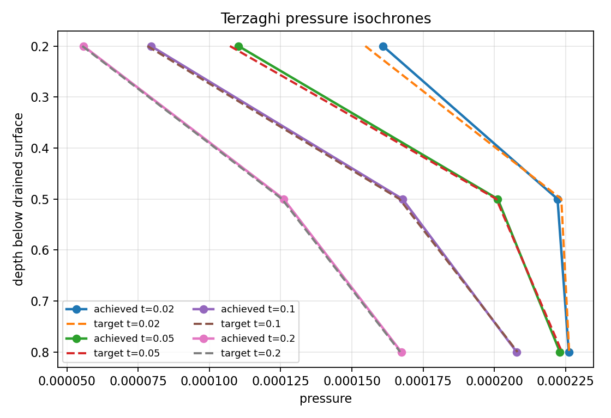
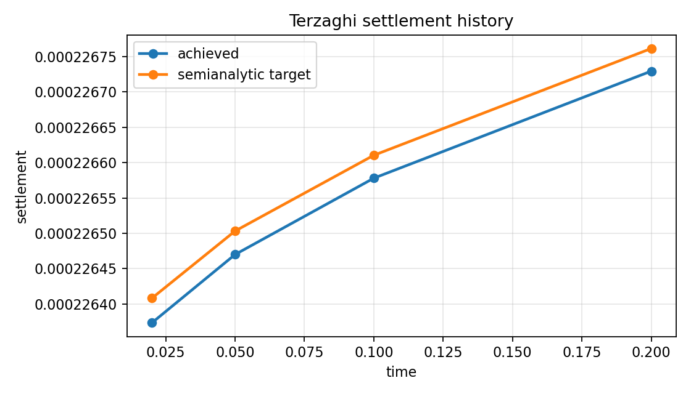
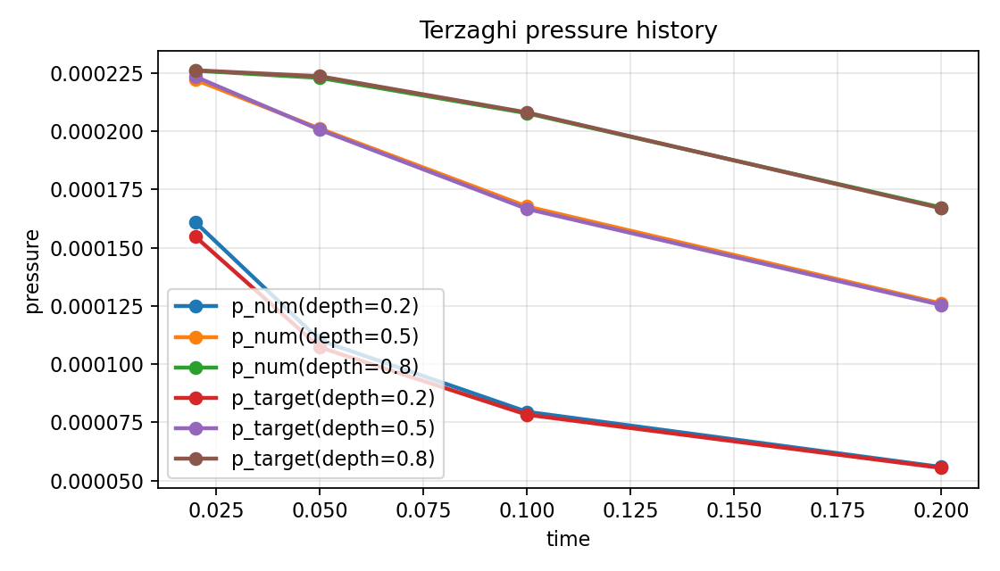
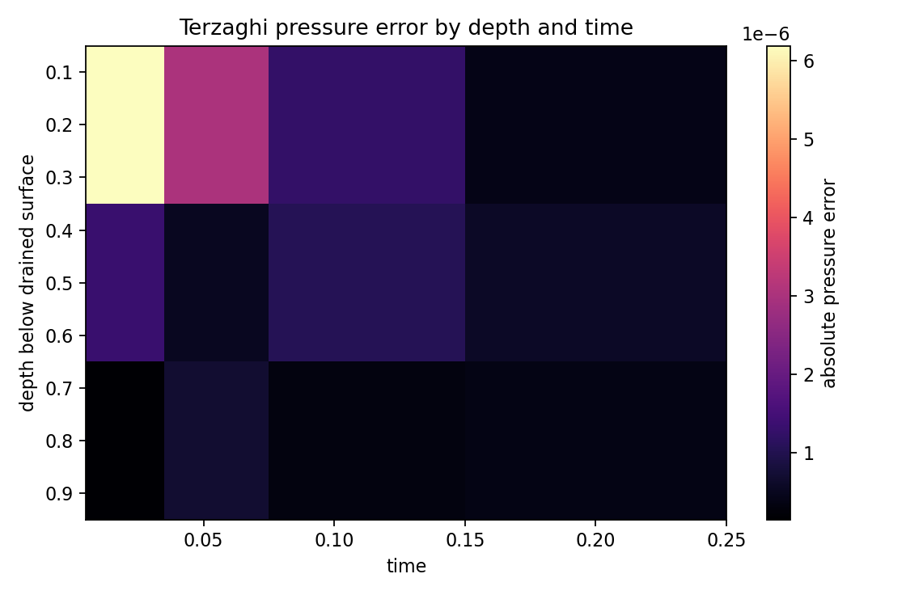

Benchmark
Terzaghi Consolidation
Family: coupled-benchmarks
Probe-pressure and settlement histories against the semianalytic Terzaghi target.
Target and Success Criteria
target_kind: Semianalytic
Tier: full
Unknowns active: u, p, theta
Frozen terms: constitutive families and one-dimensional loading geometry
Comparison grammar: Achieved / Target
Tickets: vv-008
What This Benchmark Verifies
This coupled benchmark checks that pressure and settlement histories follow the Terzaghi semianalytic target.
Benchmark Narrative
Narrative
Physical Problem
Classical Terzaghi one-dimensional consolidation: a compressed porous column drains at one boundary, so the initial excess pore pressure relaxes with depth-dependent transient dissipation while the specimen settles toward its final compacted state.
Narrative
Target Definition
The target is the semianalytic Terzaghi solution: pore-pressure profiles should flatten and decay toward zero over time, while settlement should monotonically approach the final consolidated value.
Narrative
Why These Observables
The setup schematic shows the toy problem, the settlement history is the raw compaction response, the pressure-history and pressure-isochrone plots show what probe values are extracted from the run, and the heatmap summarizes where the numerical solution is furthest from the semianalytic target across time and depth.
Narrative
How To Read The Error
Correct behavior means the achieved pressure curves track the semianalytic target at each depth, the isochrones collapse toward lower pressure as time increases, and settlement rises toward its final plateau. RMS/combined errors quantify that agreement in one number.
Narrative
Reference Qualification
Target fields are computed from the classical series-form Terzaghi semianalytic solution used at the same sample times and probe depths as the numerical run.
Narrative
Limitations
Single specimen geometry, fixed loading law, and probe-based pressure extraction only. This page still uses a schematic rather than a rendered field visualization.
pressure_rms_error
pass
settlement_rms_error
pass
combined_error
pass
Setup Schematic
figure

Setup schematic for the Terzaghi consolidation benchmark, including drained boundary, load, and pressure probe depths.
plots/setup-schematic.png
Raw Run Evidence
Extracted Observables
plot

Pressure isochrones through depth at selected times, comparing the achieved solution against the semianalytic target.
plots/pressure-isochrones.png
Target Comparison
plot

Fine settlement history against the semianalytic Terzaghi target.
plots/settlement-history.png
plot

Fine pressure history against the semianalytic Terzaghi target.
plots/pressure-history.png
Error Summary
plot

Absolute pressure error across the sampled depth-time grid used for Terzaghi accuracy assessment.
plots/pressure-error-heatmap.png
Scalar Summary
| Label | Value | Unit | Comparison | Threshold | Severity |
|---|---|---|---|---|---|
| pressure_rms_error | 0.00931918 | 0 | 0 | pass | |
| settlement_rms_error | 0.000146264 | 0 | 0 | pass | |
| combined_error | 0.00932033 | 0 | 0 | pass |
Evidence Table
| Label | Metric | Comparison | Threshold | Severity |
|---|---|---|---|---|
| pressure_rms_error | pressure_rms_error | 0.00931918 | small | pass |
| settlement_rms_error | settlement_rms_error | 0.000146264 | small | pass |
Series Overview
| Plot | Group | Observable | Case | Level | Target |
|---|---|---|---|---|---|
| pressure_history | semianalytic_target | Pressure history | depth=0.2 | 0.05 | semianalytic target |
| pressure_history | semianalytic_target | Pressure history | depth=0.2 | 0.05 | semianalytic target |
| pressure_history | semianalytic_target | Pressure history | depth=0.2 | 0.05 | semianalytic target |
| pressure_history | semianalytic_target | Pressure history | depth=0.2 | 0.05 | semianalytic target |
| pressure_history | semianalytic_target | Pressure history | depth=0.5 | 0.05 | semianalytic target |
| pressure_history | semianalytic_target | Pressure history | depth=0.5 | 0.05 | semianalytic target |
| pressure_history | semianalytic_target | Pressure history | depth=0.5 | 0.05 | semianalytic target |
| pressure_history | semianalytic_target | Pressure history | depth=0.5 | 0.05 | semianalytic target |
| pressure_history | semianalytic_target | Pressure history | depth=0.8 | 0.05 | semianalytic target |
| pressure_history | semianalytic_target | Pressure history | depth=0.8 | 0.05 | semianalytic target |
| pressure_history | semianalytic_target | Pressure history | depth=0.8 | 0.05 | semianalytic target |
| pressure_history | semianalytic_target | Pressure history | depth=0.8 | 0.05 | semianalytic target |
Cases
Case
finest
Finest pressure-probe history against the semianalytic target.